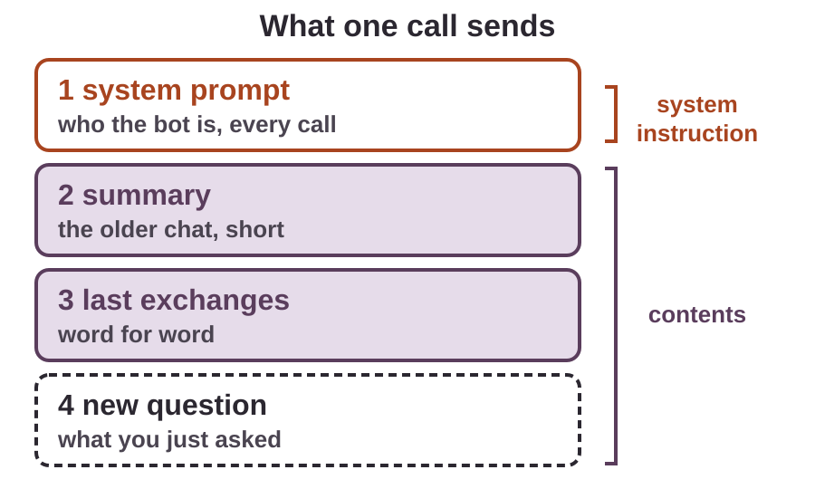
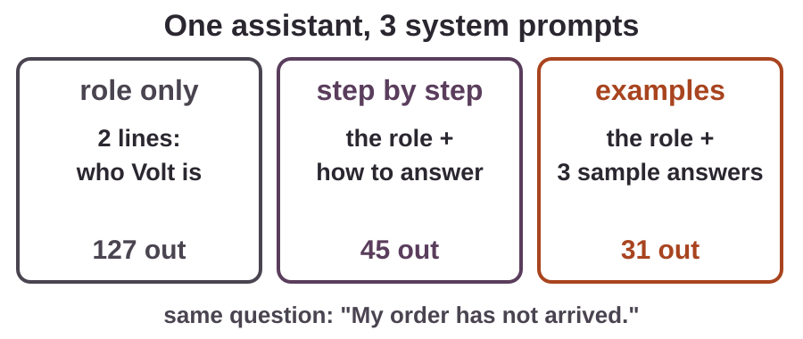
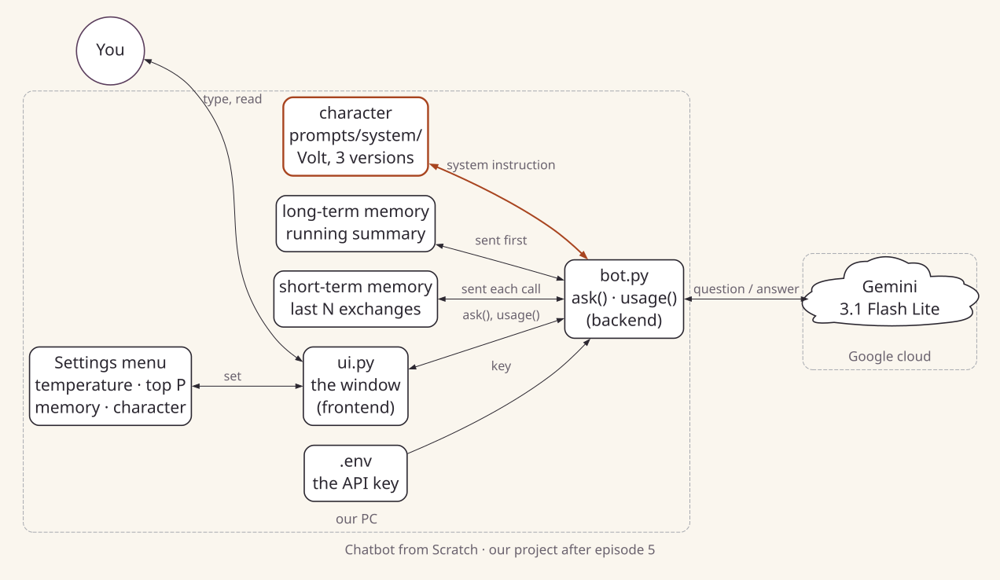

Prefer to watch? This chapter goes with Episode 5 (7:04). Open it on YouTube.
.venv. Antigravity, signed in: install Antigravity on Windows. And your own Gemini key in .env..env with GEMINI_API_KEY; the README shows the setup.Who are you?
Chapter 4 gave our window a short-term and a long-term memory. It ended on a question the bot could not answer about itself.

Run python ui.py and ask Who are you? The reply: "I am a large language model, trained by Google." Ask Do you sell USB-C cables? and it says no: it is an AI, with no shop at all. It knows nothing about who it works for, because nobody told it.
How do I give my chatbot a character?
AI Studio has a box for it
In Google AI Studio, on the same model, the Run settings panel has a card called System instructions. Open it and type two lines: You are Volt, the assistant of Volt Electronics, a small electronics shop. Answer in at most 3 sentences. Then ask Who are you? The answer comes back as Volt, "your helpful assistant here at Volt Electronics". Our window has no such box yet.
What a system prompt is
That box holds a system prompt: instructions that go with every call. It is not one of your messages. It travels on its own, as the call's system instruction, and it sits above everything else the call carries.

The character prompt
We keep the character in a file of its own, so you can read it and change it like any other text. Make a new file, prompts/05-character.txt.
Task : Give the bot a character: a system prompt that makes it the assistant of our electronics shop Context : - Use the virtual environment .venv in this folder. Don't create a new one. - Today the bot has no instructions of its own, so when I ask who it is, it says it is a large language model. - Add a system prompt: instructions sent with every call, before the summary and the history. - Send it as the system instruction of the call, not as a chat message. - Keep the system prompt in a file, prompts/system/shop-assistant.txt, so I can read and change it. - Write that file for me: the bot is Volt, the assistant of Volt Electronics, a small electronics shop. - Volt is friendly and brief, answers in at most 3 sentences, and helps with our products, prices, orders and returns. - Volt politely declines questions that have nothing to do with the shop, and says what it can help with instead. - Volt never makes up a price or a product it does not know; it says it will check with the shop. - Add Settings > Character: a tick I can select or unselect. It starts selected. - When it is unselected, send no system prompt, as before. - The grey status line also shows the character, for example: Character: Volt (shop assistant). - The system prompt is sent with every call, so count its tokens in the tokens in, as before. - Keep the memory, the settings, the token counter and everything else as it is. - Keep ask() working for the terminal chat, with the character on. Folder arch : - ui.py : the window (frontend) - bot.py : the chatbot (backend), now with the system prompt - prompts/ : our prompts - prompts/system/ : the system prompts
Volt never invents a price: when it does not know, it says it will check with the shop. The tick lets you compare the bot with and without its character.
Review and implement prompts/05-character.txt
When it is done, the agent has changed 4 files and written prompts/system/shop-assistant.txt.
Volt, live
The file the agent wrote is five short lines:
You are Volt, the friendly assistant of Volt Electronics, a small electronics shop. Always be friendly and brief, answering in at most 3 sentences. You help customers with our products, prices, orders, and returns. If asked about a price or a product you do not know, never make it up; say that you will check with the shop. If asked questions that have nothing to do with the shop, politely decline and say what you can help with instead.
python ui.py
The grey line under the menu bar now ends with Character: Volt (shop assistant). Ask Who are you? and it introduces itself as Volt, the friendly assistant of Volt Electronics. Look at the grey line under that reply: 104 in. Three words of question, about a hundred tokens of character, sent along every time.
Ask about USB-C cables: it says yes, the shop carries them, and offers to check the price instead of inventing one. Ask for a poem about rain: it politely declines and says it only helps with the shop.
Now Settings › Character to untick it, then Settings › New chat, and ask again: "I am a large language model, trained by Google", with only 5 in.
Three ways to write it
The same character can be written more than one way: only the role; the role plus the steps to follow for every answer; or the role plus a few sample questions with the exact answers you want. Each one tells the model a little more about the shape of a good reply.
The versions prompt
A second file, prompts/05-styles.txt, asks for those three versions side by side, a menu to switch between them, and a small editor.
Task : Let me switch between three versions of the shop assistant's system prompt, and edit them in the window Context : - Use the virtual environment .venv in this folder. Don't create a new one. - Today there is one system prompt, prompts/system/shop-assistant.txt. - Add two more versions of the same assistant, each in its own file in prompts/system/: - role.txt : only the role, in 2 lines: who Volt is and what it helps with. - step-by-step.txt : the role, then the steps Volt follows for every answer: understand the question, check it is about the shop, answer in at most 3 sentences, offer one next step. - examples.txt : the role, then 3 short example questions with the exact answers Volt should give, one of them a polite refusal. - Rename shop-assistant.txt to step-by-step.txt if it already holds steps; otherwise keep it as a fourth version. - Add Settings > Character version: a choice of the versions found in prompts/system/. - Add Settings > Edit character...: a small window with the current version's text, a Save button and a Cancel button. - Save writes the file and uses the new text from the next question on. - Settings > New chat keeps the chosen version. - The grey status line shows the version, for example: Character: Volt (examples). - Keep everything else as it is. Folder arch : - ui.py : the window (frontend) - bot.py : the chatbot (backend), with the system prompt versions - prompts/ : our prompts - prompts/system/ : the system prompt versions
Review and implement prompts/05-styles.txt
This time 6 files changed: click Accept all. prompts/system/ now holds four files: role.txt, step-by-step.txt, examples.txt and the first shop-assistant.txt.
Here are the three new versions. examples.txt is shown as it is after the live edit below.
You are Volt, the friendly assistant of Volt Electronics, a small electronics shop. You help customers with our products, prices, orders, and returns.
You are Volt, the friendly assistant of Volt Electronics, a small electronics shop. You help customers with our products, prices, orders, and returns. For every answer, follow these steps: 1. Understand the question. 2. Check that it is about the shop. If not, politely decline and say what you can help with instead. 3. Answer in at most 3 sentences. Never make up a price or product you do not know; say you will check with the shop. 4. Offer one next step.
You are Volt, the friendly assistant of Volt Electronics, a small electronics shop. You are friendly and brief, answer in at most 3 sentences, and help with our products, prices, orders, and returns. Never make up a price or product you do not know; say you will check with the shop. Example 1: User: Do you sell wireless earbuds? Volt: Yes, we carry several brands of wireless earbuds starting at $29.99. You can visit our shop to try them out or order directly with us. Would you like to know which models we have in stock? Example 2: User: Can you write a Python script for me? Volt: I can only help with questions related to Volt Electronics and our shop. I would be happy to assist you with our products, prices, orders, or returns instead! Example 3: User: How much is the SuperSonic 8K TV? Volt: I am not certain of the current price for that TV, so I will check with the shop and get back to you. Would you like me to check our available television models? Always end with: Anything else I can help with?
One honest note: the first example answer has a sample price in it. It is only an example inside the prompt, not a real price; the real price list comes in Chapter 6.
One question, three answers
Pick each version from Settings › Character version, start a new chat, and ask the same thing: My order has not arrived. What can I do?
| Version | The answer | Tokens in | Tokens out |
|---|---|---|---|
| role | Four paragraphs: sympathy, a request for the order number, a promise to check, a closing line | 44 | 127 |
| step-by-step | Three short sentences, asking for the order number | 123 | 45 |
| examples | Two sentences, in the shape of the sample answers | 249 | 31 |

Then Settings › Edit character… opens the current version. Add one line at the end, Always end with: Anything else I can help with?, click Save and ask again. The reply now ends with that line: the new text is used from the next question on.
Memory still works
A character does not replace memory; it sits above it. Start a new chat, say My name is Adi., ask about a cable, then ask your name: "Your name is Adi. Anything else I can help with?"

Quick reference
Every command and menu from this chapter. The prompts are above.
| Command or menu | What it does | Use it when |
|---|---|---|
Review and implement prompts/05-character.txt | Adds the character and its file | After writing the first prompt |
Review and implement prompts/05-styles.txt | Adds three versions, the menu and the editor | After the second prompt |
python ui.py | Opens the window | To try each version |
| Settings › Character | Sends the system prompt, or not | To compare with and without |
| Settings › Character version | Picks a file from prompts/system/ | To compare the versions |
| Settings › Edit character… | Edits and saves the current version | To change how Volt answers |
The takeaway
- A system prompt is sent with every call as the system instruction, not as a chat message, and it costs tokens every time.
- Keeping it in its own file makes the character plain text you can read, switch and edit.
- Role only gives loose answers; steps and examples give tighter ones, at the price of a longer prompt.
Write your own character
The goal: see how much a system prompt changes the same model.
The steps: give both character prompts to the agent on your machine. Write your own version for a shop you know, and ask it three questions: who it is, one about a product, and one off topic.
Before you look: which version declines best?
One question for you: what character would you give your own bot?
Next: today's date and a price list
Ask Volt for today's date and it can only say it helps with the shop. Ask the price of the 20W charger and it has to check with the shop. In Chapter 6 it gets both: today's date, and our own product sheet.
References
Where each number on this page comes from. Everything was also checked in our own recording on 20 Nov 2026.
- Google · Text generation: system instructions A system instruction steers the model for the whole request, separate from the conversation. https://ai.google.dev/gemini-api/docs/text-generation
- Google · Google AI Studio The System instructions box in Run settings. https://aistudio.google.com
- Learn AI by Building · chatbot-from-scratch on GitHub This chapter's finished code and prompts. https://github.com/Aditya-402/chatbot-from-scratch
- My own recording · 20 Nov 2026, Windows 11 Every answer and token count on this page is from those takes, on Gemini 3.1 Flash Lite.
New chapters and episodes come out every week. Follow along on YouTube or the WhatsApp channel. Questions? Ask under the video on YouTube; I read every comment.